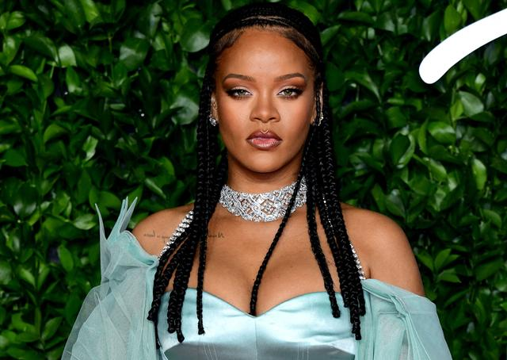

Fenty c'est fini : un premier échec pour Rihanna

À peine deux ans après son lancement, la maison de mode détenue par la chanteuse et le groupe LVMH suspend ses activités. Et pointe l'un des premiers ratés de Rihanna.
Le raout pour le lancement de Fenty a fait date. Le succès tant attendu, lui, n’est jamais venu. À peine deux ans après son arrivée sur le marché, la marque de mode Fenty lancée conjointement par Rihanna et LVMH cesse ses activités, rapporte le Women’ Wear Daily ce mercredi 10 février (les lignes beauté et lingerie perdurent). Ce qui en réalité n'est pas une suprise.
Outre le compte Instagram de la marque de prêt-à-porter Fenty gelé depuis le 1er janvier 2021, et une dernière collection remontant à novembre 2020 avec la ligne de chaussures à talons créée en collaboration avec la créatrice Amina Muaddi, les ventes n'étaient pas à la hauteur. La réputation de cash machine de Rihanna gagnée en partie grâce à sa ligne de maquillage Fenty lancée en partenariat avec LVMH (qui a rapporté environ un demi-milliard de dollars de ventes dès la première année) n'a pas suffi à trouver le public de la marque de vêtements, rapporte le WWD.
L’alliance entre la chanteuse et le leader mondial du luxe n’avait rien de commun, et avait tout d’un triomphe : la poupée r'n'b de la Barbade aux millions d’albums vendus qui devient une créatrice de mode ultra crédible en parvenant à convaincre le groupe de Bernard Arnault de lui donner carte blanche.
Premières fois en série
Avec sa ligne de prêt-à-porter Fenty deuxième mouture (la première avait été conçue en collaboration avec Puma dans le giron de Kering), Rihanna a embrassé la série des premières fois. Elle a été la première célébrité à bénéficier de tels moyens et d’une telle reconnaissance, mais aussi la première femme à créer une marque originale chez LVMH, et première femme noire à diriger une maison de mode au sein du groupe de luxe.
Enfin, Fenty a été la première maison de mode à être créée par le groupe depuis 1987, année où Bernard Arnaud avait aidé Christian Lacroix et son associé, Jean-Jacques Picart, à lancer leur marque. La popularité réelle et numérique ainsi que le sens des affaires de la chanteuse ont évidemment séduit le grand manitou de LVMH qui espérait miser sur la manne digitale que lui offrait la star.
LVMH, jamais très loin
Avec ses 90 millions d'abonnés sur Instagram, la chanteuse avançait en effet une promesse de taille : un haut pouvoir d'influence sur la génération Z, cette fameuse cible très volatile et très convoitée par le luxe. Argument qu'elle a pu démontrer par le passé en collaborant à plusieurs reprises avec LVMH. D'abord avec Dior qui en a fait sa première égérie noire en 2015. On se souvient alors que quelques mois plus tard, la maison poussait l'approche plus loin, en lui confiant la création d'une paire de solaires aux accents futuristes. Un carton.
En 2017, Rihanna a reçu le soutien de Kendo, incubateur de marques de beauté du groupe LVMH, qui l’a entourée des meilleurs spécialistes du métier pour lancer sa marque de cosmétiques Fenty Beauty. Là aussi, gros succès. Ce qui laisse penser que LVMH et Rihanna, ce n'est pas fini. Preuve, s'il en fallait, l'annonce d'une levée de fond de 115 millions de dollars pour sa marque de lingerie Savage x Fenty (en partie détenue par LVMH) tombée seulement quelques minutes après l'annonce de la cessation d'activité de Fenty.